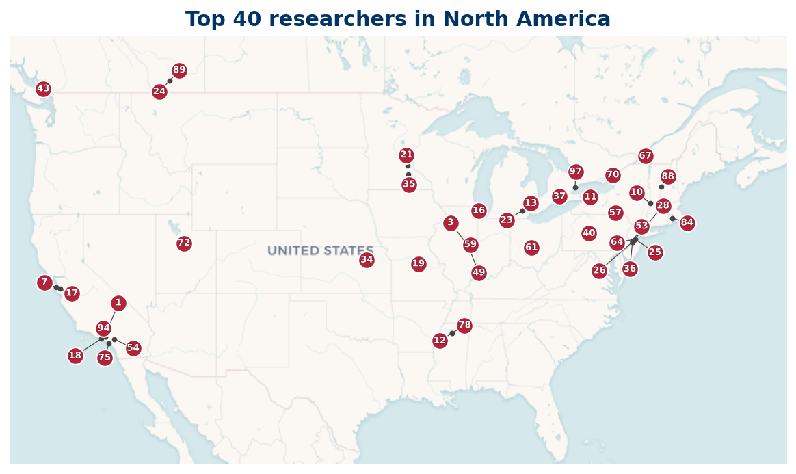

35 researchers are based in North America; 34 researchers mapped, 1 researcher location not available (institution geocode pending).
Listing
| Rank | Name | Institution | Country |
|---|---|---|---|
| 1 | J. Brian Conrey | California Institute of Technology | US |
| 3 | Steven J. Miller | Williams College | US |
| 6 | Alexandru Zaharescu | University of Illinois Urbana-Champaign | US |
| 7 | K. Soundararajan | Stanford University | US |
| 11 | M. B. Milinovich | University of Mississippi | US |
| 12 | Steven M. Gonek | University of Rochester | US |
| 13 | D. A. Goldston | San Jose State University | US |
| 14 | David W. Farmer | California Institute of Technology | US |
| 19 | Frank Morales | Machine Science | US |
| 21 | Frank Vega | Clinical Pharmacology of Miami | US |
| 22 | Vorrapan Chandee | Kansas State University | US |
| 23 | Nathan Ng | University of Lethbridge | CA |
| 27 | William D. Banks | University of Missouri | US |
| 30 | Maksym Radziwiłł | Northwestern University | US |
| 33 | Michael Rubinstein | University of Waterloo | CA |
| 39 | Greg Martin | University of British Columbia | CA |
| 49 | Kevin Ford | University of Illinois Urbana-Champaign | US |
| 52 | Jeffrey C. Lagarias | University of Michigan-Ann Arbor | US |
| 54 | Michel L. Lapidus | University of California, Riverside | US |
| 63 | Haseo Ki | Toronto Metropolitan University | CA |
| 64 | Hugh Lowell Montgomery | University of Michigan | US |
| 65 | André LeClair | Cornell University | US |
| 67 | Brad Rodgers | Queen's University | CA |
| 68 | Xian-Jin Li | Brigham Young University | US |
| 70 | Ghaith Hiary | The Ohio State University | US |
| 71 | Matthew P. Young | Rutgers University | US |
| 73 | Brian Conrey | California Institute of Technology | US |
| 76 | Jesse Thorner | University of Illinois Urbana-Champaign | US |
| 81 | Caroline L. Turnage-Butterbaugh | Carleton College | US |
| 84 | George Csordas | University of Hawaiʻi at Mānoa | US |
| 86 | Caroline L. Turnage-Butterbaugh | Carleton College | US |
| 92 | Asif Zaman | University of Toronto | CA |
| 94 | Yangbo Ye | University of Iowa | US |
| 98 | Louis-Pierre Arguin | The Graduate Center, CUNY | US |
| 100 | Enrico Bombieri | Institute for Advanced Study | US |